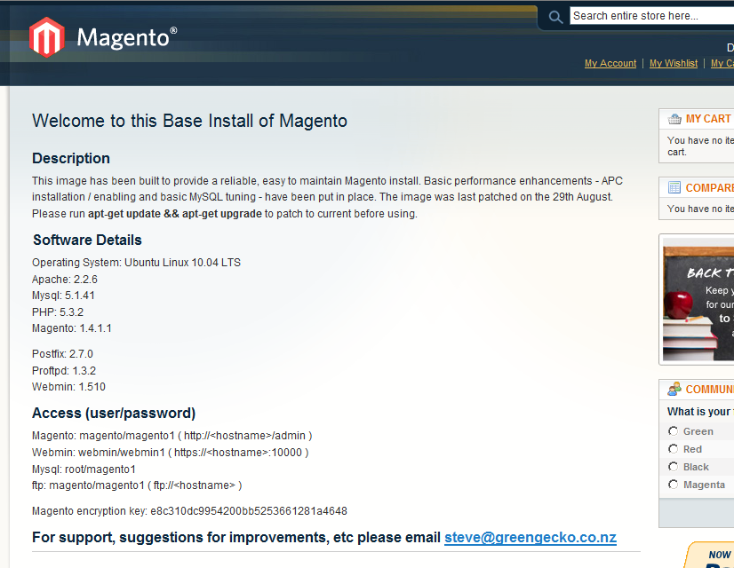

<?xml version="1.0" encoding="UTF-8"?><rss version="2.0"
	xmlns:content="http://purl.org/rss/1.0/modules/content/"
	xmlns:wfw="http://wellformedweb.org/CommentAPI/"
	xmlns:dc="http://purl.org/dc/elements/1.1/"
	xmlns:atom="http://www.w3.org/2005/Atom"
	xmlns:sy="http://purl.org/rss/1.0/modules/syndication/"
	xmlns:slash="http://purl.org/rss/1.0/modules/slash/"
	>

<channel>
	<title>free stuff &#8211; On web to print sofware, solutions and hosted services</title>
	<atom:link href="http://www.zetaprints.com/blog/tag/free-stuff/feed/" rel="self" type="application/rss+xml" />
	<link>http://www.zetaprints.com/blog</link>
	<description>From web to print and everything in between</description>
	<lastBuildDate>Fri, 02 Aug 2013 10:44:32 +0000</lastBuildDate>
	<language>en-US</language>
	<sy:updatePeriod>hourly</sy:updatePeriod>
	<sy:updateFrequency>1</sy:updateFrequency>
	<generator>https://wordpress.org/?v=4.4.1</generator>
	<item>
		<title>Free AWS Magento image for web-to-print</title>
		<link>http://www.zetaprints.com/blog/2010/09/01/free-aws-magento-image-for-web-to-print/</link>
		<comments>http://www.zetaprints.com/blog/2010/09/01/free-aws-magento-image-for-web-to-print/#respond</comments>
		<pubDate>Wed, 01 Sep 2010 08:13:59 +0000</pubDate>
		<dc:creator><![CDATA[admin]]></dc:creator>
				<category><![CDATA[web-to-print software]]></category>
		<category><![CDATA[aws]]></category>
		<category><![CDATA[free]]></category>
		<category><![CDATA[free stuff]]></category>
		<category><![CDATA[hosting]]></category>
		<category><![CDATA[magento]]></category>

		<guid isPermaLink="false">http://www.zetaprints.com/blog/?p=599</guid>
		<description><![CDATA[Setting up Magento can be a bit of a hassle. Doing it on AWS (Amazon Web Services) for the first time is even more so. Good guys from GreenGeko made it a bit easier for all of us and released a free AWS image full of goodies with Magento already installed. Anyone thinking of decent [&#8230;]]]></description>
				<content:encoded><![CDATA[<p>Setting up <a title="Magento + web-to-print" href="../../../../magento-web-to-print/">Magento</a> can be a bit of a hassle. Doing it on <a title="Amazon Web Services" href="https://aws.amazon.com/ec2/#pricing">AWS </a>(Amazon Web Services) for the first time is even more so. Good guys from <a title="Magento support" href="http://www.greengecko.co.nz/">GreenGeko</a> made it a bit easier for all of us and released a <a title="Images can be unsafe. Check before use." href="http://docs.amazonwebservices.com/AWSEC2/latest/DeveloperGuide/AESDG-chapter-usingsharedamis.html#usingsharedamis-security">free AWS image</a> full of goodies with Magento already installed.</p>
<p>Anyone thinking of <a title="Magento web-to-print hosting" href="../../../../magento-web-to-print/hosting/">decent hosting</a> for your <a title="Magento web-to-print extension" href="https://www.magentocommerce.com/magento-connect/web-to-print-and-dynamic-imaging.html">Magento web-to-print</a> site can give it a try. This is the page you get after launching the instance.</p>
<p><a href="../../../wp-content/uploads/2010/09/magento-for-web-to-print.png"></a></p>
<h2>How to find it</h2>
<p>Assuming you already have your <a title="Sign up to AWS if needed." href="http://aws.amazon.com/">AWS account</a>, a <a title="Sign up if you don't have web2print yet" href="../../../../printers/web-to-print-sign-up/">ZetaPrints account</a> and <a title="ElasticFox for FireFox" href="http://developer.amazonwebservices.com/connect/entry.jspa?externalID=609">ElasticFox</a> addon it&#8217;s relatively simple.</p>
<ol>
<li>Open ElasticFox and log in to your AWS account</li>
<li>Click on Images tab</li>
<li>Wait for the list to appear</li>
<li>Type in Magento into the text box as in the screenshot below. You should see a much reduced list.</li>
<li>Choose an image with a title resembling the one in the screenshot.</li>
<li>Right-click on the selected image and launch an instance.</li>
<li>Go to Instances tab and grab the public address / DNS name from the properties once the instance is running.</li>
<li>Paste the address into your web browser.</li>
</ol>
<p>You should see a page similar to the screen-shot above with all the details about the instance, Magento and support options.</p>
<p><a href="../../../wp-content/uploads/2010/09/web-to-print-image.png"></a></p>
<h2>Other Magento images</h2>
<p>There are some other Magento images, mainly by <a title="OpenSource as a service" href="http://www.jumpbox.com/pricing">JumpBox</a>. You can try them as well, but you are in for a bit of expense. Check them out. Could be value for money for you. We&#8217;ll stick with the free option for now.</p>
<h2>Magento support</h2>
<p>As much as we want to switch you to Magento we cannot assist with the installation or support of your Magento site. Our <a title="Magento web-to-print partners" href="../../../../magento-web-to-print/magento-partners/">partners </a>will be happy to help you.</p>
<h2>Magento web-to-print</h2>
<p>This Magento image has no pre-installed <a title="Magento web-to-print" href="../../../../category/magento-web-to-print/">web-to-print</a>. Follow <a title="magento web-to-print set-up" href="../../../../help/magento/">our instructions</a> to set up and configure your <a title="magento web-to-print demo" href="../../../../magento/">web-to-print site</a>.</p>
]]></content:encoded>
			<wfw:commentRss>http://www.zetaprints.com/blog/2010/09/01/free-aws-magento-image-for-web-to-print/feed/</wfw:commentRss>
		<slash:comments>0</slash:comments>
		</item>
		<item>
		<title>Free skins released</title>
		<link>http://www.zetaprints.com/blog/2008/11/14/free-skins-released/</link>
		<comments>http://www.zetaprints.com/blog/2008/11/14/free-skins-released/#respond</comments>
		<pubDate>Fri, 14 Nov 2008 21:14:43 +0000</pubDate>
		<dc:creator><![CDATA[admin]]></dc:creator>
				<category><![CDATA[Printer update history]]></category>
		<category><![CDATA[web-to-print features]]></category>
		<category><![CDATA[web-to-print software]]></category>
		<category><![CDATA[free stuff]]></category>
		<category><![CDATA[skins]]></category>
		<category><![CDATA[user interface]]></category>

		<guid isPermaLink="false">http://www.zetaprints.com/blog/?p=262</guid>
		<description><![CDATA[We&#8217;ve just released 4 free web-to-print skins to spurse up the looks of your site. You can use them as is or download the source and modify to your requirements. Read instructions on how to use them.]]></description>
				<content:encoded><![CDATA[<p>We&#8217;ve just released <a title="Free web-to-print skins" href="../../../../help/category/skins/">4 free web-to-print skins</a> to spurse up the looks of your site. You can use them as is or download the source and modify to your requirements. Read <a title="How to use web-to-print skins" href="../../../../help/custom-skins/">instructions </a>on how to use them.</p>
<div style="width: 441px" class="wp-caption alignnone"><a href="../../../../help/green-skin/"></a><p class="wp-caption-text">Green web-to-print skin</p></div>
<div style="width: 441px" class="wp-caption alignnone"><a href="../../../../help/grey-skin/"></a><p class="wp-caption-text">Grey web-to-print skin</p></div>
<div style="width: 441px" class="wp-caption alignnone"><a href="../../../../help/jeans-skin/"></a><p class="wp-caption-text">Jeans web-to-print skin</p></div>
<div style="width: 441px" class="wp-caption alignnone"><a href="../../../../help/olive-skin/"></a><p class="wp-caption-text">Olive web-to-print skin</p></div>
]]></content:encoded>
			<wfw:commentRss>http://www.zetaprints.com/blog/2008/11/14/free-skins-released/feed/</wfw:commentRss>
		<slash:comments>0</slash:comments>
		</item>
	</channel>
</rss>

<!-- Localized -->